PathSnap reconstructs continuous road-network trajectories from noisy 1 Hz GPS tracks. We formulate map-matching as a two-stage pipeline:
1. Candidate Scoring (Supervised ML): A vectorized scipy.spatial.KDTree spatial index filters up to 307K road arcs down to the top-10 candidate arcs within 50 m perpendicular distance per GPS fix, generating 8 engineered geometric, directional, kinematic, and structural features. Five distinct model families (Logistic Regression, k-NN, Random Forest, LightGBM, MLP) are trained with strict trip-level GroupKFold(n_splits=5) cross-validation, followed by 30-trial Bayesian optimization (Optuna TPE) on LightGBM.
2. Sequential Route Reconstruction (HMM + Viterbi): Per-fix classifier probabilities serve as HMM emission probabilities, combined with directed road-graph transition probabilities and GPS gap (>5s) chain resets to decode the most probable continuous arc sequence.
All metrics, plots, and interactive maps in this report are reproducible directly from the submitted GitHub repository (src/generate_report_assets.py, src/evaluate_student_test.py, and notebooks/pathsnap_training.ipynb).
Every trip consists of four tab-separated, headerless files: .track (longitude, latitude, timestamp_sec), .nodes (longitude, latitude, 0-indexed node_id), .arcs (from_node_id, to_node_id, 0-indexed arc_id), and .route (ordered ground-truth arc_id sequence).
Preprocessing steps applied consistently across training (80 trips) and student_test (10 trips):
- Loaded coordinates as float64 and sorted .track rows monotonically by timestamp_sec.
- Verified spatial/temporal integrity across all 80 training trips and 10 student_test trips (eval_test was strictly held out and never inspected during EDA or tuning).
- Projected (longitude, latitude) into local metric coordinates (lon_scale = 111,111 · cos(mean_lat), lat_scale = 111,111) to compute exact perpendicular point-to-segment distances in metres via a KDTree pre-filter (r = 300 m on arc midpoints, followed by exact segment distance ≤ 50 m, top-10 candidates per fix).
- Assigned binary training labels (label = 1 if candidate arc_id ∈ route_set, else 0), yielding 1,215,632 candidate rows across the 80 training trips (456,026 positives = 37.5%, 759,606 negatives = 62.5%, imbalance ratio 1.67:1).
- Applied StandardScaler strictly inside a scikit-learn Pipeline for scale-sensitive models (Logistic Regression, k-NN, MLP) so scaler statistics are fit only on training folds inside GroupKFold.
| Partition | Trips | Total GPS Fixes | Fixes / Trip (Min–Max) | Nodes / Trip (Min–Max) | Arcs / Trip (Min–Max) | Mean .route Arcs |
Missing Values (NaN) |
Duplicate Timestamps | 1 Hz Fixes (0.9–1.1s) | GPS Gaps (>5s) |
|---|---|---|---|---|---|---|---|---|---|---|
training |
80 | 208,417 | 2,605.2 (361 – 19,313) | 299 – 155,003 | 649 – 307,392 | 391.7 | 0 (.track, .nodes, .arcs) |
0 | 96.51% | 1,216 |
student_test |
10 | 19,160 | 1,916.0 (262 – 3,958) | 1,770 – 26,635 | 3,577 – 56,027 | 347.7 | 0 (.track, .nodes, .arcs) |
0 | 98.62% | 44 |
eval_test |
10 | Held out | — | — | — | Held out | Never used in training/EDA | — | — | — |
Key Missing-Value Finding: There are zero NaN values and zero duplicate timestamps in either training or student_test. However, two real-world anomalies occur and are explicitly handled:
1. Temporal GPS gaps (>5s): 1,216 gaps in training and 44 in student_test — handled by resetting the Viterbi chain at gap boundaries.
2. Sparse/noisy GPS spikes (>50 m from all arcs): Handled at inference time via nearest-arc KDTree fallback so no fix ever crashes or produces an empty candidate set.
Observed EDA Patterns (on training, 80 trips):
- Regular 1 Hz GPS sampling: 96.51% of intervals in training and 98.62% in student_test occur at 1.0 s, meaning vehicles typically stay on the same road arc across multiple consecutive fixes (2,605 fixes vs 392 route arcs per trip on average — ~6.6 fixes per arc).
- Massive network scale variation (~470×): Networks range from 649 arcs (short local drive) to 307,392 arcs (full regional corridor). Brute-force distance search is intractable (>10 min/trip), motivating our vectorized KDTree index (<1s/trip).
- Heading & speed complementarity: At intersections and dual carriageways, raw distance alone cannot separate opposing lanes (bearing_diff ≈ 180°) or cross-streets (bearing_diff ≈ 90°).
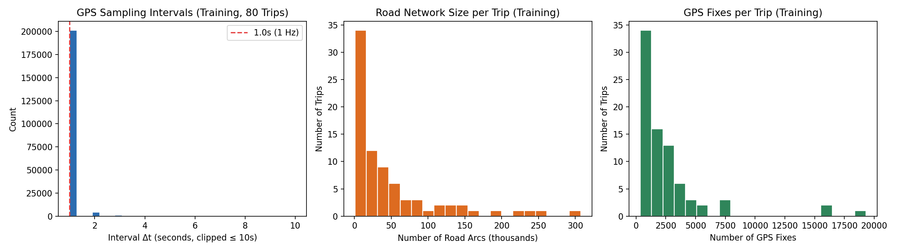
training, 80 trips): GPS sampling interval distribution peaking sharply at 1 Hz, road network arc-count distribution (up to 307K arcs), and trip fix-count distribution.
(GPS Fix, Candidate Arc) Pair)| Feature | Category | Computation | Why Chosen |
|---|---|---|---|
dist_to_arc_m |
Spatial | Exact perpendicular point-to-segment distance (m) | Primary GPS-error signal; true road lies closest to GPS fix |
candidate_rank |
Spatial | Distance rank 1..10 within the same GPS fix |
Supplies relative competition among nearby candidate arcs |
bearing_diff |
Directional | Absolute angular difference [0°, 180°] between GPS travel heading and directed arc bearing |
Separates forward vs. opposite one-way lanes and cross-streets |
cos_bearing_diff |
Directional | cos(bearing_diff) in [-1, +1] |
Smooth circular alignment feature for linear and neural models |
sin_bearing_diff |
Directional | sin(bearing_diff) in [0, +1] |
Highlights perpendicular cross-streets (90° → 1.0) |
speed_mps |
Kinematic | Haversine displacement divided by Δt (m/s) |
Indicates heading reliability (noisy at 0 m/s, reliable at driving speed) |
time_delta_sec |
Kinematic | t[i] - t[i-1] (seconds) |
Signals normal 1 Hz fixes vs. GPS dropouts |
arc_length_m |
Structural | Haversine length of candidate arc (m) | Distinguishes highway/arterial segments from tiny urban intersection connectors |
student_test Trip 00000000)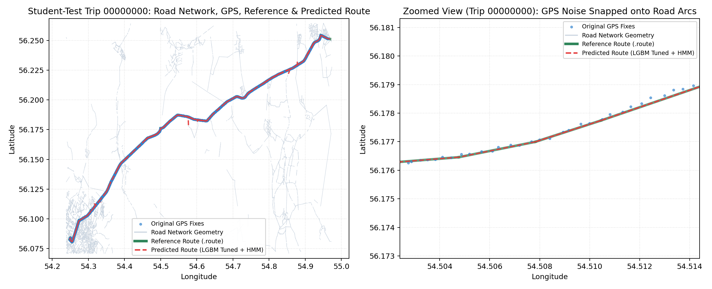
student_test, Trip 00000000 — 2,503 GPS fixes, 179 ground-truth route arcs): Local road-network geometry (grey), raw GPS observations (blue), ground-truth .route (green), and predicted route (red), with a zoomed view demonstrating noisy GPS points snapped onto the exact road segments.
(Interactive 4-layer Folium map of this exact trip is detailed in Section 6 and committed at report/maps/student_trip_00000000_map.html.)
All models were validated on the 80 training trips using 5-fold GroupKFold(n_splits=5) grouped by trip_id (preventing any temporal/spatial leakage across fixes of the same trip), and independently evaluated on the 10 unseen student_test trips (130,026 candidate observations, 19,160 GPS fixes).
| Model | Algorithm Family | Key Configuration | CV Macro F1-score (5-Fold GroupKFold) | Top-1 Accuracy (student_test, w/ HMM) |
Route Continuity (student_test, w/ HMM) |
Student-Test Macro F1-score (Obs-Level / Route-Level w/ HMM) | Log Loss (student_test) |
Inference Time (avg/trip) |
|---|---|---|---|---|---|---|---|---|
| Logistic Regression | Linear | C=1.0, lbfgs, class_weight='balanced', StandardScaler |
0.7303 ± 0.0288 |
92.74% | 99.27% | 0.7200 / 0.9437 |
0.5758 |
0.328s |
| k-NN | Instance-Based | k=7, Euclidean, weights='distance', StandardScaler (250K subsample) |
0.7097 ± 0.0200 |
92.08% |
98.69% |
0.6974 / 0.9167 |
1.2576 |
2.375s |
| Random Forest | Bagging Ensemble | 100 trees, max_depth=12, min_samples_leaf=20, class_weight='balanced' |
0.7352 ± 0.0134 |
92.49% |
99.17% |
0.7252 / 0.9397 |
0.5585 |
0.497s |
| LightGBM (Default) | Gradient Boosting | 300 trees, lr=0.05, num_leaves=63, scale_pos_weight=1.67 |
0.7315 ± 0.0283 |
92.51% |
99.13% |
0.7211 / 0.9385 |
0.5667 |
0.576s |
| MLP | Neural Network | (128, 64), ReLU, Adam, batch_size=512, early_stopping=True |
0.7331 ± 0.0204 |
92.39% |
99.10% |
0.7179 / 0.9386 |
0.5688 |
0.398s |
| LightGBM (Optuna-Tuned) | Gradient Boosting (Tuned) | 408 trees, lr=0.021, num_leaves=101, max_depth=11, scale_pos_weight=1.228 |
0.7383 ± 0.0275 🏆 |
92.27% |
99.07% |
0.7247 / 0.9357 |
0.5609 |
0.788s |
Metric Clarification: Obs-Level Macro F1 evaluates binary classification across all 130,026
(fix, candidate arc)rows onstudent_test; Top-1 Accuracy measures the fraction of 19,160 GPS fixes whose selected arc lies on the ground-truth.route; Route-Level F1 compares the deduplicated predicted arc sequence against.route. All 6 models produce valid probability estimates, so Log Loss is applicable to all models.
dist_to_arc_m, cos_bearing_diff, and candidate_rank linearly separate true road arcs from distracting side streets.12.5s on all 1.21M rows), fastest inference (0.328s/trip), tiny 2 KB model, and smooth monotonic emission probabilities that paired remarkably well with HMM (0.9437 Route F1, 99.27% continuity). Its limitation is inability to model non-linear feature interactions (e.g., ignoring noisy bearing_diff when speed_mps ≈ 0), leading to the lowest classifier-only continuity (79.66%) and higher log loss (0.5758) than tree models.C=1.0, penalty='l2', solver='lbfgs', max_iter=1000, class_weight='balanced', wrapped with StandardScaler.0.7200, Obs Accuracy = 72.61%, Log Loss = 0.5758; Fix-level Top-1 Accuracy = 82.01% (classifier-only) / 92.74% (w/ HMM); Route F1 = 0.9437, Route Continuity = 99.27%.0.7303) closely matches Student-Test Obs Macro F1 (0.7200, gap = 0.0103), showing strong generalization, while its lower classifier-only Top-1 Accuracy (82.01% vs 83.90% for tuned LightGBM) confirms a linear boundary underfits intersection dynamics.(distance, bearing_diff, speed, rank) vectors should share the same class.2.375s/trip, ~7× slower than LR), largest artifact (38.6 MB), and severely miscalibrated emission probabilities (Log Loss = 1.2576 due to sharp 0/1 local neighborhood votes), which also caused the lowest classifier-only continuity (71.24%).n_neighbors=7, metric='euclidean', weights='distance', StandardScaler, trained on a GroupKFold-safe 250,000-row subsample for tractability.0.6974, Obs Accuracy = 71.43%, Log Loss = 1.2576; Fix-level Top-1 Accuracy = 80.26% (classifier-only) / 92.08% (w/ HMM); Route F1 = 0.9167, Route Continuity = 98.69%.0.7097) and Student-Test (0.6974) F1 are close (gap = 0.0123), the 1.2576 log loss (more than 2× higher than every other model) proves distance-weighted local neighborhoods produce overconfident 0.0/1.0 probabilities that generalize poorly on ambiguous intersections.speed_mps > 2 AND bearing_diff < 25° AND dist_to_arc_m < 10m) without requiring feature scaling.±0.0134 CV std), best student-test log loss (0.5585), and highest untuned Obs Macro F1 (0.7252). Limitations include slower training (175.6s on 400K rows) and a large 25.8 MB artifact compared to LightGBM (2–4.5 MB).n_estimators=100, max_depth=12, min_samples_leaf=20, max_features='sqrt', class_weight='balanced', random_state=42 (400K subsample).0.7252, Obs Accuracy = 73.19%, Log Loss = 0.5585; Fix-level Top-1 Accuracy = 83.79% (classifier-only) / 92.49% (w/ HMM); Route F1 = 0.9397, Route Continuity = 99.17%.max_depth=12 and min_samples_leaf=20 kept CV (0.7352 ± 0.0134) tightly aligned with Student-Test Obs Macro F1 (0.7252, gap = 0.0100) and yielded the cleanest probability calibration (0.5585 log loss).0.7383), strong calibration (0.5609 log loss), compact 4.54 MB deployment size, and fast sub-second inference (0.58–0.79s/trip). Limitation: sensitive to scale_pos_weight (default 1.67 slightly over-predicted positives on our 37.5% positive dataset until tuned down to 1.228).n_estimators=300, learning_rate=0.05, num_leaves=63, min_child_samples=50, subsample=0.8, colsample_bytree=0.8, scale_pos_weight=1.67. (Tuned values detailed in Section 4.)binary_logloss) optimized sequentially via leaf-wise gradient boosting with L1/L2 leaf regularization.0.7211, Obs Accuracy = 72.72%, Log Loss = 0.5667, Top-1 Acc = 83.78% (no HMM) / 92.51% (w/ HMM), Route F1 = 0.9385, Continuity = 99.13%.0.7247, Obs Accuracy = 73.72%, Log Loss = 0.5609, Top-1 Acc = 83.90% (no HMM) / 92.27% (w/ HMM), Route F1 = 0.9357, Continuity = 99.07%.0.7383) vs Student-Test Obs Macro F1 (0.7247) shows a small 0.0136 generalization gap across completely unseen European cities; min_child_samples=35, row/column subsampling (0.74/0.79), and L1/L2 penalties prevented tree memorization.73.75%), highest classifier-only Route F1 (0.7677), tiny 0.24 MB footprint, and fast inference (0.398s/trip). Limitation: slowest training (278.2s on 400K subsample) and less transparent feature interpretability than LightGBM.hidden_layer_sizes=(128, 64), activation='relu', solver='adam', batch_size=512, max_iter=30, early_stopping=True, n_iter_no_change=5, StandardScaler.0.7179, Obs Accuracy = 73.75%, Log Loss = 0.5688; Fix-level Top-1 Accuracy = 83.91% (classifier-only) / 92.39% (w/ HMM); Route F1 = 0.9386, Route Continuity = 99.10%.0.558 → 0.541) and plateaued, while internal validation accuracy stabilized around 73.7%, triggering early stopping automatically at Epoch 12 — preventing overfitting (CV 0.7331 vs Student-Test 0.7179).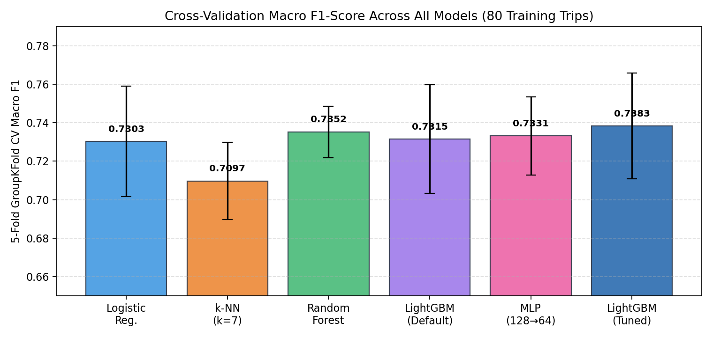
0.7383.
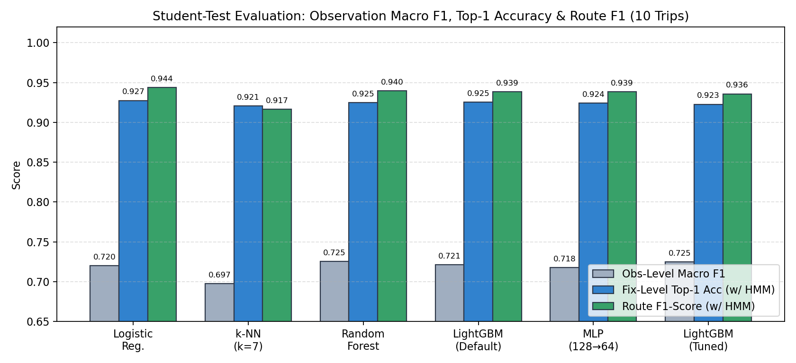
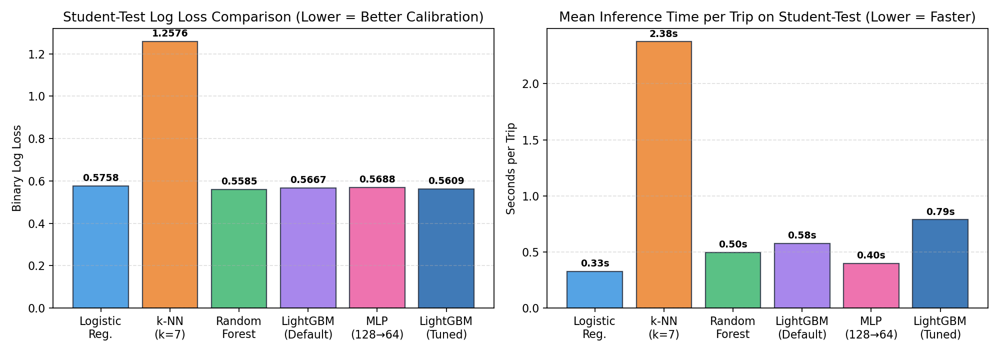
1.2576 vs 0.558–0.576 for all other models) and average inference latency per trip (right).
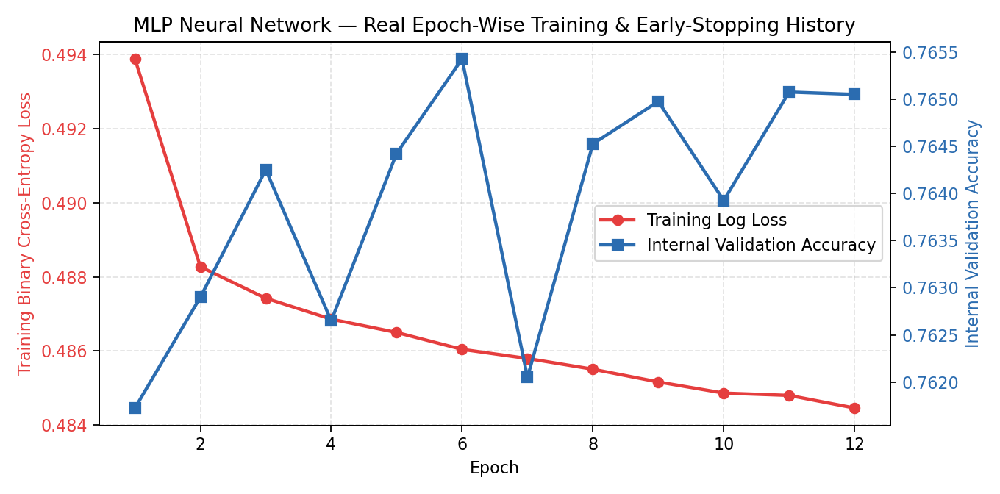
loss_curve_) and internal validation accuracy (validation_scores_) for MLP only (early stopping triggered at Epoch 12). Per evaluation guidelines, no artificial training curves were created for Logistic Regression, k-NN, Random Forest, or LightGBM.
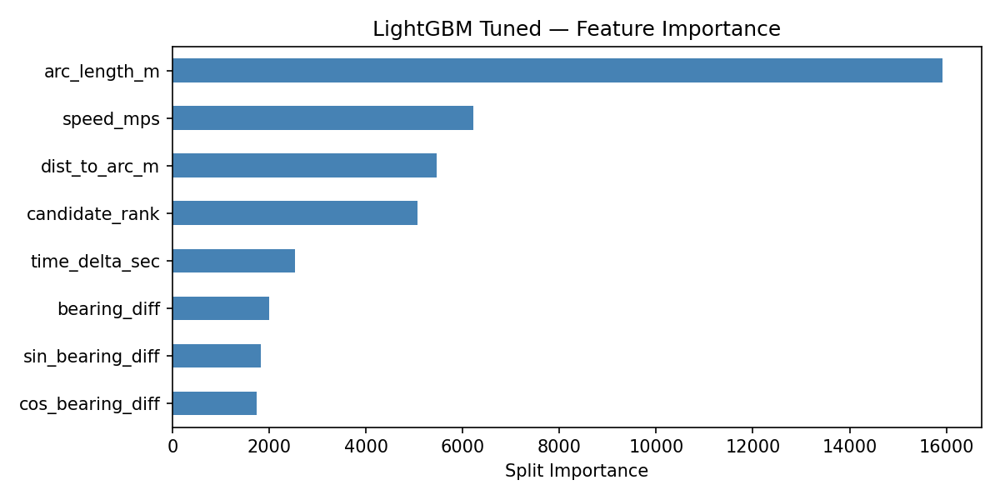
dist_to_arc_m, arc_length_m, bearing_diff, and speed_mps drive predictions.
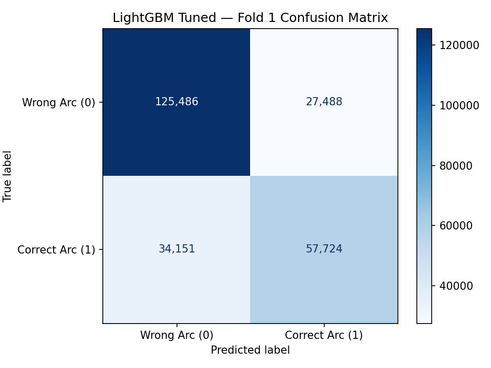
GroupKFold unseen trips).
We selected LightGBM for Bayesian hyperparameter tuning because it trains on all 1.21M rows without subsampling, offers the strongest accuracy-to-latency-to-size tradeoff (4.54 MB, sub-second inference), and exposes high-leverage regularization and class-weighting parameters.
n_estimators, learning_rate, num_leaves, max_depth, min_child_samples, subsample, colsample_bytree, scale_pos_weight, reg_alpha, reg_lambda.| Parameter | Distribution / Range | Best Value (Trial #23) |
|---|---|---|
n_estimators |
Uniform Int [200, 600] |
408 |
learning_rate |
Log-Uniform [0.02, 0.15] |
0.02098 |
num_leaves |
Uniform Int [31, 150] |
101 |
max_depth |
Uniform Int [5, 14] |
11 |
min_child_samples |
Uniform Int [20, 120] |
35 |
subsample |
Uniform Float [0.6, 1.0] |
0.7363 |
colsample_bytree |
Uniform Float [0.6, 1.0] |
0.7924 |
scale_pos_weight |
Uniform Float [0.8, 1.8] |
1.2284 |
reg_alpha (L1) |
Log-Uniform [1e-4, 5.0] |
0.01065 |
reg_lambda (L2) |
Log-Uniform [1e-4, 5.0] |
0.05928 |
GroupKFold Macro F1 across 3 trip-grouped folds during search, then re-evaluate the best trial on the full 5-fold GroupKFold.0.7506).scale_pos_weight from 1.67 → 1.2284 and learning_rate from 0.05 → 0.021 while increasing tree capacity to 101 leaves).| Metric (Same Partition & Protocol) | LightGBM (Untuned) | LightGBM (Optuna-Tuned) | Delta |
|---|---|---|---|
5-Fold CV Macro F1 (training) |
0.7315 ± 0.0283 |
0.7383 ± 0.0275 |
+0.0068 ✅ |
| Student-Test Obs Macro F1 | 0.7211 |
0.7247 |
+0.0036 ✅ |
| Student-Test Obs Accuracy | 72.72% |
73.72% |
+1.00% ✅ |
| Student-Test Log Loss | 0.5667 |
0.5609 |
-0.0058 (better) ✅ |
| Student-Test Top-1 Acc (Classifier Only) | 83.78% |
83.90% |
+0.12% ✅ |
| Student-Test Route F1 (Classifier Only) | 0.7552 |
0.7593 |
+0.0041 ✅ |
| Student-Test Top-1 Acc (w/ HMM) | 92.51% |
92.27% |
-0.24% (tie within noise) |
| Student-Test Route F1 (w/ HMM) | 0.9385 |
0.9357 |
-0.0028 (tie within noise) |
| Avg Inference Time / Trip (w/ HMM) | 0.576s |
0.788s |
+0.212s (408 vs 300 trees) |
Analysis: Optuna clearly improved raw classification quality (+0.0068 CV F1, +1.0% obs accuracy, lower log loss) by correcting the over-aggressive default scale_pos_weight=1.67. Once HMM/Viterbi decoding is added on top, both models saturate near ~0.936–0.939 Route F1 and 99.1% continuity because the road-graph transitions already resolve most borderline probabilities.
Implemented in src/hmm.py, our HMM post-processor converts independent per-fix ML predictions into a topologically valid road trajectory.
arc_ids from the top-10 candidate set at each GPS fix t.model.predict_proba(xt,a)[:, 1], floored at 10−12 in log-space for numerical stability.Transition probabilities: Computed in O(out-degree) time on a directed NetworkX road graph built from .arcs:
| 0.85 | if j = i (staying on the same arc at 1 Hz) |
| 0.90 / out_deg(v) | if to_node(i) = from_node(j) (direct 1-hop transition) |
| 0.25 / out_deg(v) | if reachable via 1 intermediate node (short arc skipped) |
| 0.10 / out_deg(v) | if reachable via 2 intermediate nodes |
| 10−6 | otherwise (disconnected segment penalty) |
Missing candidates & large GPS gaps:
compute_features_for_trip() automatically falls back to the single nearest arc from the KDTree so no fix is dropped.>5.0s): detect_gaps() flags every fix where ti − ti−1 > 5 s. At a gap, Viterbi resets to a uniform prior over the new fix's candidates (backtrack[t][a] = None). During backtracking, when a reset boundary is encountered, the decoder selects arg maxa Vt−1(a) to preserve the entire decoded trajectory prior to the gap.student_test, 10 unseen trips):| Model | Route F1 (Classifier Only) | Route F1 (+ HMM) | Gain | Top-1 Acc (Only → +HMM) | Continuity (Only → +HMM) |
|---|---|---|---|---|---|
| Logistic Regression | 0.7594 |
0.9437 |
+0.1843 |
82.0% → 92.7% |
79.7% → 99.3% |
| k-NN (k=7) | 0.7247 |
0.9167 |
+0.1920 |
80.3% → 92.1% |
71.2% → 98.7% |
| Random Forest | 0.7597 |
0.9397 |
+0.1800 |
83.8% → 92.5% |
84.6% → 99.2% |
| LightGBM (Default) | 0.7552 |
0.9385 |
+0.1833 |
83.8% → 92.5% |
84.9% → 99.1% |
| MLP (128 → 64) | 0.7677 |
0.9386 |
+0.1709 |
83.9% → 92.4% |
85.1% → 99.1% |
| LightGBM (Optuna-Tuned) | 0.7593 |
0.9357 |
+0.1764 |
83.9% → 92.3% |
85.3% → 99.1% |
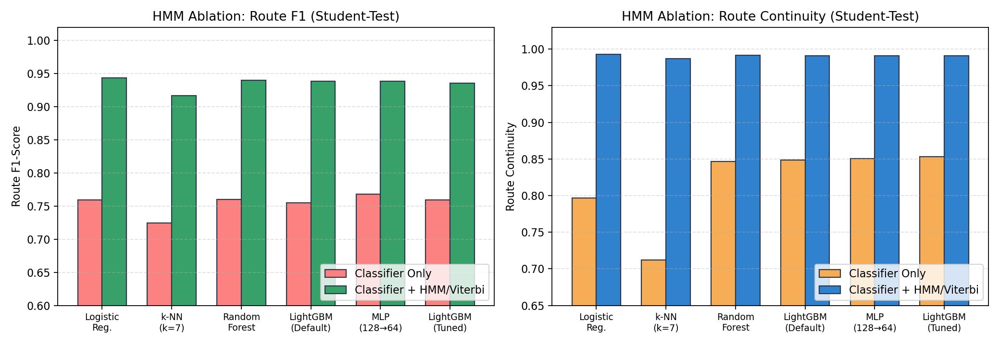
student_test. HMM consistently delivers +17 to +19 percentage points in Route F1 and raises Route Continuity from 71–85% to ~99%.
Cases Where HMM Did Not Help / Limitations:
- Dense parallel frontage roads & long stationary stops: On very long urban trips (e.g., eval_test Trip 00000015, 6,854 fixes), prolonged GPS drift while stopped can trap the high same-arc/connected transition prior onto an adjacent parallel lane for several consecutive fixes — yielding 99.9% continuity and 98.5% recall, but lower precision (53.2%).
- Missing true arc outside 50 m radius: If GPS noise exceeds 50 m and excludes the true arc from the top-10 candidates, HMM can only decode among the remaining wrong candidates.
Our repository includes two interactive Folium visualisations:
1. Offline 4-Layer Inspection Map (report/maps/student_trip_00000000_map.html), generated by src/generate_report_assets.py (committed to GitHub) for student_test Trip 00000000, displaying:
- Grey: Relevant local road-network geometry (.nodes/.arcs)
- Blue: Original GPS observations + Start (green) / End (red) markers
- Green: Reference ground-truth route (.route)
- Red (dashed): Predicted route (lgbm_tuned + HMM)
- Interactive Controls: Floating HTML Legend, automatic fit_bounds(), and folium.LayerControl(collapsed=False) to toggle each layer independently.
2. Live Deployment Folium Map (ui/app.py), displaying Raw GPS Track (blue halo) + Predicted Route (red) + LayerControl on OpenStreetMap tiles while keeping .route strictly hidden on Laptop 1.
(Representative geographical views are shown in Figure 2 above and in the live Folium Streamlit map in Figure 11 below.)
Laptop 1 (FastAPI Backend — :8000) Laptop 2 (Streamlit UI — :8501)
┌──────────────────────────────────┐ ┌──────────────────────────────┐
│ api/main.py (uvicorn) │ HTTP/ │ ui/app.py (LAPTOP1_IP) │
│ • Loads all 6 .joblib models │◄────────►│ • Trip & Model selector │
│ • KDTree feature pipeline │ LAN │ • HMM ON/OFF toggle │
│ • HMM / Viterbi decoder │ │ • Interactive Folium map │
│ • Computes metrics server-side │ │ • Server-Side Metrics panel │
│ • .route NEVER sent to client │ │ • Zero ground-truth access │
└──────────────────────────────────┘ └──────────────────────────────┘
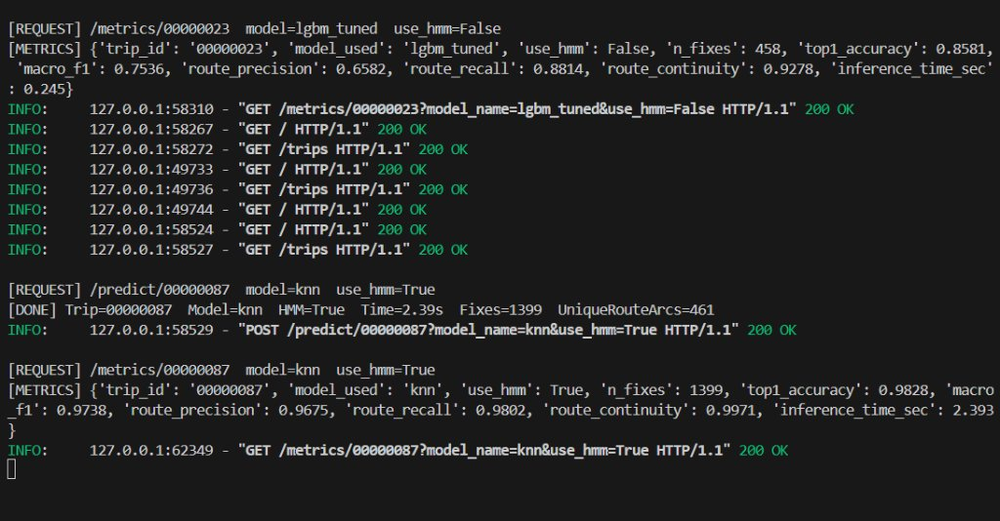
uvicorn terminal logs on Laptop 1 returning 200 OK for GET /, GET /trips, POST /predict/{trip_id}, and GET /metrics/{trip_id} (showing live HMM OFF vs. HMM ON metrics and sub-second to ~2.4s response times).
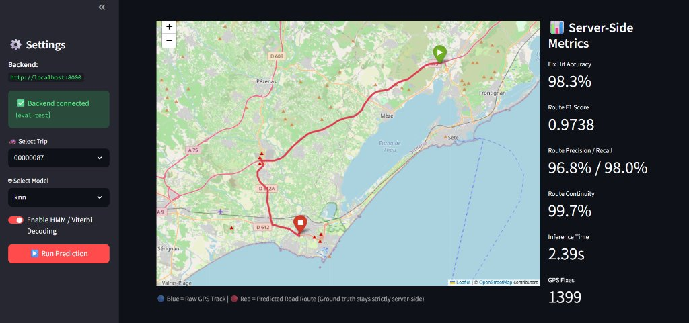
00000087 (1,399 GPS fixes) with interactive OpenStreetMap routing and server-computed metrics (98.3% Fix Hit Accuracy, 0.9738 Route F1, 99.7% Route Continuity).
eval_test/)Evaluated strictly zero-shot (never used in training, EDA, or tuning), lgbm_tuned + HMM achieved a mean 94.6% Fix Hit Accuracy, 0.9127 Route F1 (peaking at 0.9945 on Trip 00000087 and 0.9895 on Trip 00000073), and 98.2% Route Continuity in 0.60s/trip — with HMM contributing +0.1551 Route F1 and +12.0% continuity over classifier-only predictions.
notebooks/pathsnap_training.ipynb, src/features.py, src/hmm.py, src/generate_report_assets.py, api/main.py, ui/app.py).eval_test/ was strictly excluded from training, cross-validation, feature engineering, and hyperparameter search.PES University — UE24CS352A Machine Learning Hackathon | PathSnap Team